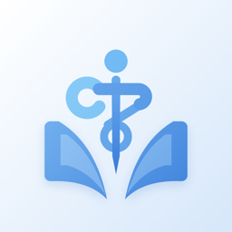

Medora
Personvern / Privacy
Denne erklæringen forklarer hvilke data Medora lagrer, hvorfor, og hvilke rettigheter du har.
Personvern
Vi tar personvernet ditt på alvor.
- Datainnsamling Hvilke data vi samler inn
- Hvordan vi bruker data For at appen skal virke for deg
- Lagring og sikkerhet Hvordan vi beskytter dataene dine
- Dine rettigheter Tilgang, endring og sletting
- Tredjepartstjenester Eksterne tjenester vi bruker
Datainnsamling
Hva Medora lagrer om deg.
- Kontoinformasjon E-postadressen din og passordet ditt. Passordet lagres kryptert, og vi kan ikke lese det.
- Profil Navn og, hvis du velger å legge det inn, fødselsdato, utdanning, universitet, studieår, sted, en kort beskrivelse og profilbilde.
- Studiedata Emner, temaer, eksamensdatoer, studieplaner, flashcards, spørsmål, quizresultater og studiehistorikken din.
- Pensum Notater du limer inn og notater laget fra PDF-er du importerer. Selve PDF-filen blir ikke lagret.
- Innstillinger Språk, utseende, studiepreferanser og tidspunkt for påminnelser.
Hvordan vi bruker data
Bare for at appen skal virke for deg.
- Innlogging E-post og passord identifiserer kontoen din og sørger for at den er din.
- Sikkerhetskopi og synk Studiedataene lagres på kontoen din, slik at de ikke går tapt om du bytter eller mister telefonen.
- Fremgang og plan Resultatene dine brukes på telefonen til å regne ut fremgang, hva som har forfalt og hva du bør lese nå.
- AI-hjelp Når du ber AI om spørsmål, flashcards, temaer eller en vurdering, sendes emne, tema, pensumet ditt og sammendrag av resultatene dine til AI-en. Navn og e-post sendes ikke.
- Påminnelser Påminnelser settes opp på din egen telefon. Ingenting om dem sendes til oss.
Lagring og sikkerhet
Hvor dataene dine ligger og hvordan de beskyttes.
- På telefonen din Studiedataene lagres i appen på telefonen din. Innloggingen ligger i telefonens sikre nøkkelring.
- På kontoen din En kopi lagres i en database der hver bruker bare kan lese og endre sine egne data. Profilbilder lagres privat.
- Underveis Alt som sendes mellom appen, kontoen din og AI-en går over kryptert forbindelse.
- Delte telefoner Hvis noen andre logger inn på samme telefon, legges dataene dine til side, og de ser bare sine egne.
- Hvor lenge Vi beholder dataene dine til du sletter dem eller sletter kontoen din.
Dine rettigheter
Du bestemmer over dine egne data.
- Se og eksportere Du kan eksportere alle studiedataene dine som en fil under Innstillinger, Data, synk og sikkerhet.
- Endre Du kan når som helst endre profilen, e-posten og alt studieinnholdet ditt i appen.
- Slette Under Innstillinger, Personvern og data kan du slette studiedataene eller hele kontoen. Sletter du kontoen, fjernes den både fra telefonen og fra skyen.
- Spørre eller klage Du kan når som helst kontakte oss om dataene dine. Bor du i Norge, kan du også klage til Datatilsynet.
Tredjepartstjenester
De eksterne tjenestene Medora er avhengig av.
- Supabase Håndterer innlogging og lagrer kontoen, studiedataene og profilbildet ditt.
- OpenAI Lager AI-innholdet. Den mottar emne, tema, pensum, importerte PDF-er og resultatsammendrag som du ber AI jobbe med. Vi ber OpenAI om ikke å lagre forespørslene. OpenAI kan likevel beholde dem en begrenset tid for å hindre misbruk, etter sine egne vilkår.
- Railway Kjører Medora-serveren som sjekker at du er logget inn og sender AI-forespørslene dine videre. Serveren lagrer ikke innholdet ditt.
- Apple Leverer appen og viser påminnelser på telefonen din.
This policy explains what data Medora stores, why, and what rights you have.
Privacy
We take your privacy seriously.
- Data collection What data we collect
- How we use data To make the app work for you
- Storage and security How we protect your data
- Your rights Access, changes and deletion
- Third-party services The outside services we use
Data collection
What Medora stores about you.
- Account information Your email address and your password. The password is stored encrypted and we cannot read it.
- Profile Name and, if you choose to add them, date of birth, education, university, study year, location, a short bio and a profile picture.
- Study data Subjects, topics, exam dates, study plans, flashcards, questions, quiz results and your study history.
- Course material Notes you paste in and notes made from PDFs you import. The PDF file itself is not kept.
- Settings Language, appearance, study preferences and reminder times.
How we use data
Only to make the app work for you.
- Signing in Your email and password identify your account and keep it yours.
- Backup and sync Your study data is saved to your account so it is not lost if you change or lose your phone.
- Progress and plan Your results are used on your phone to calculate progress, what is due and what to study next.
- AI help When you ask AI for questions, flashcards, topics or a review, the subject, topic, your course material and summaries of your results are sent to the AI. Your name and email are not sent.
- Reminders Reminders are scheduled on your own phone. Nothing about them is sent to us.
Storage and security
Where your data is and how it is protected.
- On your phone Your study data is stored in the app on your phone. Your sign-in is kept in the phone's secure keychain.
- In your account A copy is stored in a database where each user can only read and change their own data. Profile pictures are stored privately.
- In transit Everything sent between the app, your account and the AI goes over an encrypted connection.
- Shared phones If someone else signs in on the same phone, your data is put away and they see only their own.
- How long We keep your data until you delete it or delete your account.
Your rights
You decide over your own data.
- See and export You can export all your study data as a file under Settings, Data, sync and security.
- Change You can change your profile, your email and all your study content in the app at any time.
- Delete Under Settings, Privacy and data, you can delete your study data or your whole account. Deleting the account removes it from your phone and from the cloud.
- Ask or complain You can contact us about your data at any time. If you live in Norway, you can also complain to the Norwegian Data Protection Authority (Datatilsynet).
Third-party services
The outside services Medora depends on.
- Supabase Handles sign-in and stores your account, your study data and your profile picture.
- OpenAI Creates the AI content. It receives the subject, topic, course material, imported PDFs and result summaries that you ask AI to work with. We ask OpenAI not to store these requests. OpenAI may still keep them for a limited time to prevent abuse, under its own terms.
- Railway Runs the Medora server that checks you are signed in and passes your AI requests on. The server does not save your content.
- Apple Delivers the app and shows reminders on your phone.